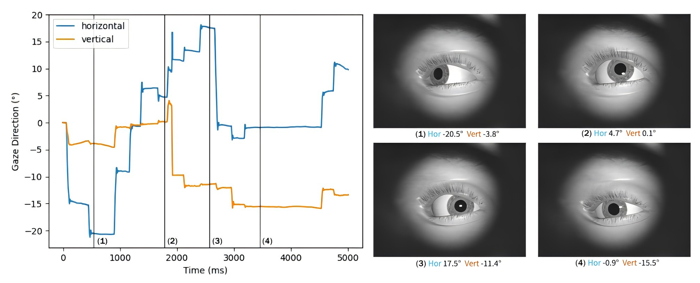

DiffEyeSyn: User-specific Subtle Eye Movement Synthesis Using Diffusion Models
Chuhan Jiao, Guanhua Zhang, Yeonjoo Cho, Zhiming Hu, Andreas Bulling,
Proceedings of the IEEE International Conference on Automatic Face and Gesture Recognition, 2026.

Abstract
Simulating realistic human eye movements is important in computer graphics and human-computer interaction. Prior work has mainly focused on low-frequency gaze data or predicting scanpaths from visual stimuli, often overlooking the subtle movements that reflect natural eye behaviour. These subtle dynamics are known containing rich information of an individual. We present DiffEyeSyn, the first computational method for synthesising realistic eye movements that capture these fine-grained details. Our key idea is to model subtle variations in gaze data as a user-specific noise that can be injected into any given sequence. We formulate this injection task as a conditional diffusion process in which the synthesis is conditioned on user-specific embeddings extracted from the gaze data using pre-trained models for user authentication. We propose user identity guidance - a novel loss function that allows the model to produce movements that remain both realistic and consistent with individual characteristics.Experiments on two public datasets show that DiffEyeSyn produces eye movements that are more realistic than baseline methods in terms of velocity distribution and preserving user-specific information. Furthermore, we demonstrate that DiffEyeSyn can synthesise large-scale gaze data and support various downstream tasks, such as gaze-based user identification. As such, our work can serve as a post-processing method for existing scanpath prediction approaches and provides a foundation for applications such as character animation and eye movement biometrics.Links
BibTeX
@inproceedings{jiao26diffeyesyn,
author = {Jiao, Chuhan and Zhang, Guanhua and Cho, Yeonjoo and Hu, Zhiming and Bulling, Andreas},
title = {DiffEyeSyn: User-specific Subtle Eye Movement Synthesis Using Diffusion Models},
booktitle = {Proceedings of the IEEE International Conference on Automatic Face and Gesture Recognition},
year = {2026}}